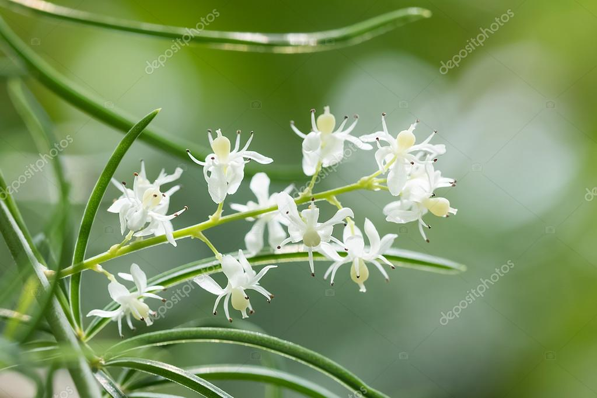
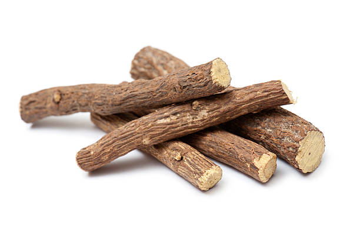
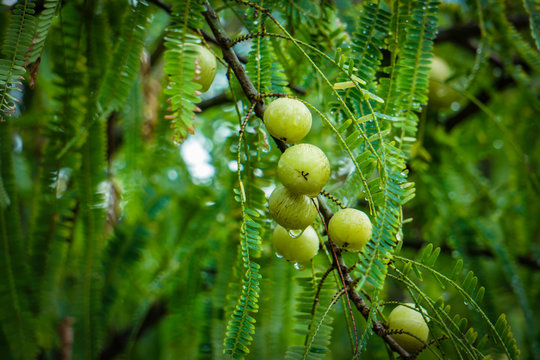
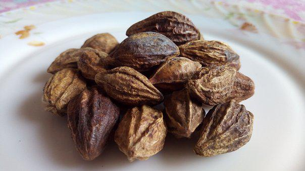

1. Ashwagandha
Ashwagandha is a traditional ayurvedic medicine used for multiple uses. It is found in India, Africa, and some parts of the Mediterranean continent. Generally, Ashwagandha roots are used for preparing ayurvedic remedies.
The benefits of Ashwagandha are as follows –
Boosts immune system
Decreases stress and calm your body
Enhance your memory and cognition
Helps to manage weight
Improve heart health
Promote thyroid health
2. Brahmi
Brahmi is also called a Bacopa Monnieri is a traditional ayurvedic herb that has been used specifically to treat neurological disorders. It has anti-inflammatory and antioxidant properties. The leaves of this plant are considered very pure and effective.
The benefits of Brahmi are as follows –
Works as a brain tonic
Improve nervous system function
Reduces stress and depression
Calm your mind
Acts as a natural blood purifier give healthy skin and hair

3. Shatavari
Shatavari is a medicinal herb with excellent health benefits. Shatavari is also called as ‘queen of herbs’. It has antioxidant properties due to the presence of Saponins in it. It is very beneficial to boost your immunity and for the female reproductive system.
The benefits of Shatavari are as follows –
Enhance immunity power
Reduces inflammations
Works excellent to relieve acidity symptoms
Maintain blood sugar levels
controls anti-aging changes of skin

4. Licorice
Licorice has been used since the old days not only in Indian but in Greek and Egyptian medicine preparations. Due to its sweet flavor, it is been used in various preparations such as herbal teas, candies, capsules, and liquid extracts.
The benefits of Licorice are as follows –
Provides relief from acidity, stomach ulcers, and food poisoning
Treats cold and cough
Reduces stress
Works as an anti-inflammatory, anti-spasmodic, anti-microbial, and anti-aging
Excellent for hair fall and to prevent dandruff
Beneficial in prostate gland problems
5. Neem
Neem is a well-known herb due to its bitter taste. The word “Neem” is derived from the Sanskrit Nimba – which means the bestower of good health. Neem has miraculous healing powers used in various disorders. It is used in almost 75% of formulations in Ayurveda.
The benefits of Neem are as follows –
Neem has antiseptic, anti-microbial, and antifungal properties.
Potent blood purifier and detoxifier
Treat acne, eczema, and skin diseases.
Helps to reduce fever, especially malarial fever
Maintain oral hygiene and prevent dental caries, infections
6. Manjistha
Manjistha is great blood and lymph purifier helps to improve and regulate your immune system. Manjistha is effective to cleanse the liver, kidneys, and skin.
The benefits of Manjistha are as follows –
Boost your immunity
Helps to improve complexion and clears acne
Memory enhancer and increase learning ability
Treats allergic conditions

7. Amla
Amala is a powerful rejuvenating herb in Ayurveda. It mainly uses to boost the immune system. It has great antioxidant properties.
The benefits of Amla are as follows –
Enhance body immunity
Strengthen heart muscles
Great for hair, skin, eyes, and nails
Reduces high blood sugar levels
Relieve from acidity

8. Haritaki
Haritaki is known as a ‘king of herbs’ in the ayurvedic system of medicine. It is useful to strengthen energy, awareness, and intelligence. Strengthens the vital functions of the body, such as strong digestion, nutrient absorption, elimination, etc.